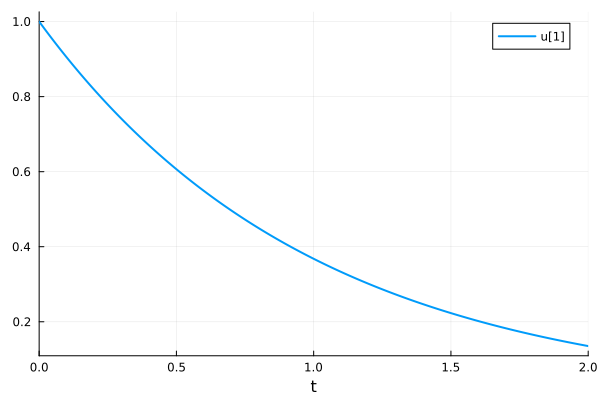
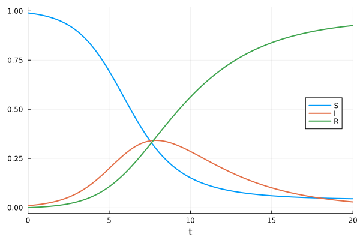
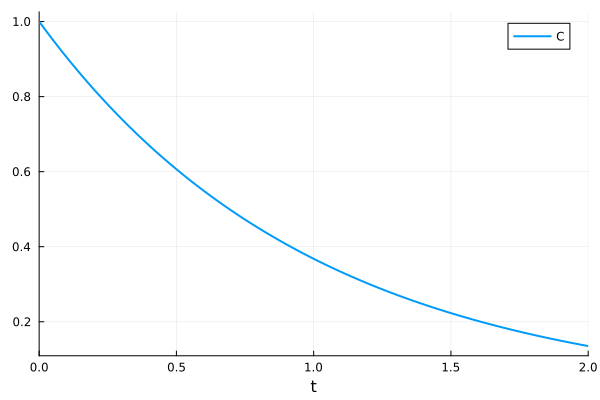
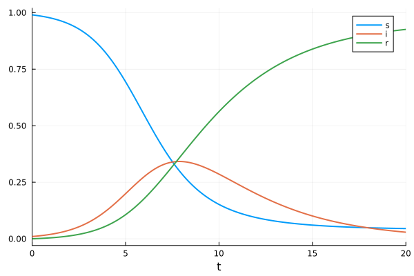
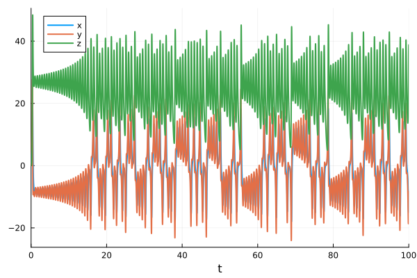
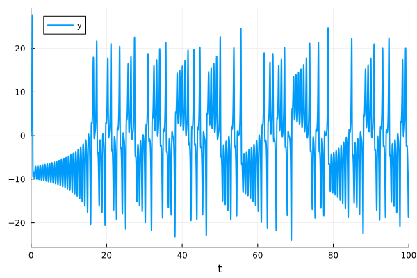
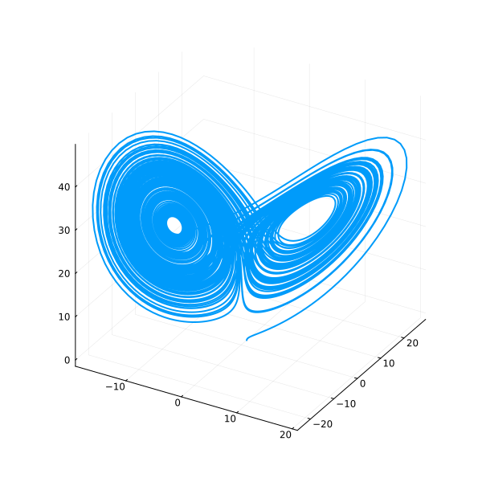
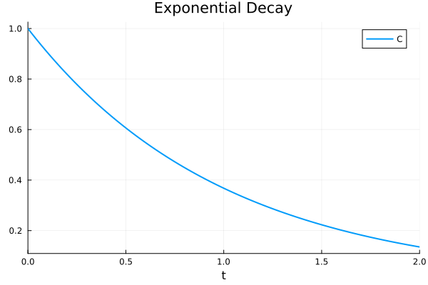
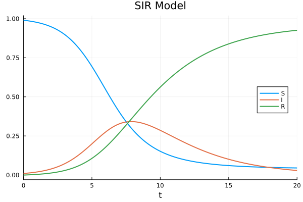

Solving differential equations in Julia#
Standard procedures
Define a model function representing the right-hand-side (RHS) of the system.
Out-of-place form:
f(u, p, t)whereuis the state variable(s),pis the parameter(s), andtis the independent variable (usually time). The output is the right hand side (RHS) of the differential equation system.In-place form:
f!(du, u, p, t), where the output is saved todu. The rest is the same as the out of place form. The in-place form has potential performance benefits since it allocates less than the out-of-place (f(u, p, t)) counterpart.Using ModelingToolkit.jl : define equations and build an ODE system.
Initial conditions (
u0) for the state variable(s).(Optional) define parameter(s)
p.Define a problem (e.g.
ODEProblem) using the modeling function (f), initial conditions (u0), simulation time span (tspan == (tstart, tend)), and parameter(s)p.Solve the problem by calling
solve(prob).
Solve ODEs using OrdinaryDiffEq.jl#
Documentation: https://docs.sciml.ai/DiffEqDocs/stable/
Single variable: Exponential decay model#
The concentration of a decaying nuclear isotope could be described as an exponential decay:
State variable
\(C(t)\): The concentration of a decaying nuclear isotope.
Parameter
\(\lambda\): The rate constant of decay. The half-life \(t_{\frac{1}{2}} = \frac{ln2}{\lambda}\)
using OrdinaryDiffEq
using Plots
Plots.default(linewidth=2)
The model function is the 3-argument out-of-place form, f(u, p, t).
decay(u, p, t) = p * u
p = -1.0 ## Rate of exponential decay
u0 = 1.0 ## Initial condition
tspan = (0.0, 2.0) ## Start time and end time
prob = ODEProblem(decay, u0, tspan, p)
sol = solve(prob)
retcode: Success
Interpolation: 3rd order Hermite
t: 8-element Vector{Float64}:
0.0
0.10001999200479662
0.34208427066999536
0.6553980136343391
1.0312652525315806
1.4709405856363595
1.9659576669700232
2.0
u: 8-element Vector{Float64}:
1.0
0.9048193287657775
0.7102883621328676
0.5192354400036404
0.35655576576996556
0.2297097907863828
0.14002247272452764
0.1353360028400881
Solution at time t=1.0 (with interpolation)
sol(1.0)
0.3678796381978344
Time points
sol.t
8-element Vector{Float64}:
0.0
0.10001999200479662
0.34208427066999536
0.6553980136343391
1.0312652525315806
1.4709405856363595
1.9659576669700232
2.0
Solutions at corresponding time points
sol.u
8-element Vector{Float64}:
1.0
0.9048193287657775
0.7102883621328676
0.5192354400036404
0.35655576576996556
0.2297097907863828
0.14002247272452764
0.1353360028400881
Visualize the solution
plot(sol)

Three variables: The SIR model#
The SIR model describes the spreading of an contagious disease can be described by the SIR model:
State variables
\(S(t)\) : the fraction of susceptible people
\(I(t)\) : the fraction of infectious people
\(R(t)\) : the fraction of recovered (or removed) people
Parameters
\(\beta\) : the rate of infection when susceptible and infectious people meet
\(\gamma\) : the rate of recovery of infectious people
using OrdinaryDiffEq
using Plots
Plots.default(linewidth=2)
SIR model (in-place form can save array allocations and thus faster)
function sir!(du, u, p, t)
s, i, r = u
β, γ = p
v1 = β * s * i
v2 = γ * i
du[1] = -v1
du[2] = v1 - v2
du[3] = v2
return nothing
end
sir! (generic function with 1 method)
p = (β=1.0, γ=0.3)
u0 = [0.99, 0.01, 0.00]
tspan = (0.0, 20.0)
prob = ODEProblem(sir!, u0, tspan, p)
sol = solve(prob)
retcode: Success
Interpolation: 3rd order Hermite
t: 17-element Vector{Float64}:
0.0
0.08921318693905476
0.3702862715172094
0.7984257132319627
1.3237271485666187
1.991841832691831
2.7923706947355837
3.754781614278828
4.901904318934307
6.260476636498209
7.7648912410433075
9.39040980993922
11.483861023017885
13.372369854616487
15.961357172044833
18.681426667664056
20.0
u: 17-element Vector{Vector{Float64}}:
[0.99, 0.01, 0.0]
[0.9890894703413342, 0.010634484617786016, 0.00027604504087978485]
[0.9858331594901347, 0.012901496825852227, 0.0012653436840130785]
[0.9795270529591532, 0.017282420996456258, 0.003190526044390597]
[0.9689082167415561, 0.02463126703444545, 0.006460516223998508]
[0.9490552312363142, 0.03827338797605378, 0.012671380787632141]
[0.9118629475333939, 0.06347250098224964, 0.024664551484356558]
[0.8398871089274511, 0.11078176031568547, 0.049331130756863524]
[0.7075842068024722, 0.19166147882272844, 0.1007543143747994]
[0.508146028721987, 0.29177419341470584, 0.20007977786330722]
[0.31213222024413995, 0.3415879120018046, 0.34627986775405545]
[0.18215683096365565, 0.3099983134156389, 0.5078448556207055]
[0.10427205468919205, 0.22061114011133276, 0.6751168051994751]
[0.07386737407725845, 0.14760143051851143, 0.7785311954042301]
[0.05545028910907714, 0.07997076922865315, 0.8645789416622697]
[0.047334990695892025, 0.04060565321383335, 0.9120593560902746]
[0.04522885458929332, 0.029057416110814603, 0.925713729299892]
Visualize the solution
plot(sol, label=["S" "I" "R"], legend=:right)

Using ModelingToolkit.jl (recommended)#
ModelingToolkit.jl is a high-level package for symbolic-numeric modeling and simulation in the Julia ecosystem.
using ModelingToolkit
using OrdinaryDiffEq
using Plots
Plots.default(linewidth=2)
Exponential decay model#
@independent_variables t ## Time
@parameters λ ## Decaying rate constant
@variables C(t) ## Time and concentration
D = Differential(t) ## Differential operator
Differential(t)
Define an ODE with equations
eqs = [D(C) ~ -λ * C]
@mtkbuild decaySys = ODESystem(eqs, t)
u0 = [C => 1.0]
p = [λ => 1.0]
tspan = (0.0, 2.0)
prob = ODEProblem(decaySys, u0, tspan, p)
sol = solve(prob)
plot(sol)

SIR model#
using OrdinaryDiffEq
using ModelingToolkit
using Plots
Plots.default(linewidth=2)
@independent_variables t
@parameters β γ
@variables s(t) i(t) r(t)
D = Differential(t)
eqs = [
D(s) ~ -β * s * i,
D(i) ~ β * s * i - γ * i,
D(r) ~ γ * i
]
@mtkbuild sirSys = ODESystem(eqs, t)
p = [β => 1.0, γ => 0.3]
u0 = [s => 0.99, i => 0.01, r => 0.00]
tspan = (0.0, 20.0)
prob = ODEProblem(sirSys, u0, tspan, p)
sol = solve(prob)
plot(sol)

Lorenz system#
The Lorenz system is a system of ordinary differential equations having chaotic solutions for certain parameter values and initial conditions. (Wikipedia)
using OrdinaryDiffEq
using ModelingToolkit
using Plots
Plots.default(linewidth=2)
Building the model is wrapped in a function
function build_lorentz(; name)
@parameters begin
σ = 10.0
ρ = 28.0
β = 8 / 3
end
@independent_variables t
@variables begin
x(t) = 1.0 ## Independent variable (time)
y(t) = 0.0 ## Independent variable (time)
z(t) = 0.0 ## Independent variable (time)
end
D = Differential(t)
eqs = [
D(x) ~ σ * (y - x),
D(y) ~ x * (ρ - z) - y,
D(z) ~ x * y - β * z
]
sys = ODESystem(eqs, t; name)
return sys
end
build_lorentz (generic function with 1 method)
tspan = (0.0, 100.0)
@mtkbuild sys = build_lorentz()
prob = ODEProblem(sys, [], tspan, [])
sol = solve(prob)
retcode: Success
Interpolation: 3rd order Hermite
t: 1292-element Vector{Float64}:
0.0
3.5678604836301404e-5
0.0003924646531993154
0.003262408731175873
0.009058076622686189
0.01695647090176743
0.027689960116420883
0.041856352219618344
0.060240411865493296
0.08368541210909924
⋮
99.43545175575305
99.50217600300971
99.56297541572351
99.62622492183432
99.69561088424294
99.77387244562912
99.86354266863755
99.93826978918452
100.0
u: 1292-element Vector{Vector{Float64}}:
[1.0, 0.0, 0.0]
[0.9996434557625105, 0.0009988049817849058, 1.781434788799189e-8]
[0.9961045497425811, 0.010965399721242457, 2.1469553658389193e-6]
[0.9693591548287857, 0.0897706331002921, 0.00014380191884671585]
[0.9242043547708632, 0.24228915014052968, 0.0010461625485930237]
[0.8800455783133068, 0.43873649717821195, 0.003424260078582332]
[0.8483309823046307, 0.6915629680633586, 0.008487625469885364]
[0.8495036699348377, 1.0145426764822272, 0.01821209108471829]
[0.9139069585506618, 1.442559985646147, 0.03669382222358562]
[1.0888638225734468, 2.0523265829961646, 0.07402573595703686]
⋮
[1.2013409155396158, -2.429012698730855, 25.83593282347909]
[-0.4985909866565941, -2.2431908075030083, 21.591758421186338]
[-1.3554328352527145, -2.5773570617802326, 18.48962628032902]
[-2.1618698772305467, -3.5957801801676297, 15.934724265473792]
[-3.433783468673715, -5.786446127166032, 14.065327938066913]
[-5.971873646288483, -10.261846004477597, 14.060290896024572]
[-10.941900618598972, -17.312154206417734, 20.65905960858999]
[-14.71738043327772, -16.96871551014668, 33.06627229408802]
[-13.714517151605754, -8.323306384833089, 38.798231477265624]
x-y-z time-series
plot(sol)

y-t plot
plot(sol, idxs=[sys.y])

idxs=(sys.x, sys.y, sys.z) makes a phase plot.
plot(sol, idxs=(sys.x, sys.y, sys.z), label=false, size=(600, 600))

Saving simulation results#
using DataFrames
using CSV
df = DataFrame(sol)
CSV.write("lorenz.csv", df)
rm("lorenz.csv")
Catalyst.jl#
Catalyst.jl is a domain-specific language (DSL) package to simulate chemical reaction networks.
using OrdinaryDiffEq
using Catalyst
using Plots
Plots.default(linewidth=2)
Exponential decay model#
decay_rn = @reaction_network begin
λ, C --> 0
end
p = [:λ => 1.0]
u0 = [:C => 1.0]
tspan = (0.0, 2.0)
prob = ODEProblem(decay_rn, u0, tspan, p)
sol = solve(prob)
retcode: Success
Interpolation: 3rd order Hermite
t: 8-element Vector{Float64}:
0.0
0.10001999200479662
0.34208427066999536
0.6553980136343391
1.0312652525315806
1.4709405856363595
1.9659576669700232
2.0
u: 8-element Vector{Vector{Float64}}:
[1.0]
[0.9048193287657775]
[0.7102883621328676]
[0.5192354400036404]
[0.35655576576996556]
[0.2297097907863828]
[0.14002247272452764]
[0.1353360028400881]
plot(sol, title="Exponential Decay")

SIR model#
sir_rn = @reaction_network begin
β, S + I --> 2I
γ, I --> R
end
Extract the symbols for later use
@unpack β, γ, S, I, R = sir_rn
p = [β => 1.0, γ => 0.3]
u0 = [S => 0.99, I => 0.01, R => 0.00]
tspan = (0.0, 20.0)
prob = ODEProblem(sir_rn, u0, tspan, p)
sol = solve(prob)
retcode: Success
Interpolation: 3rd order Hermite
t: 17-element Vector{Float64}:
0.0
0.08921318693905476
0.3702862715172094
0.7984257132319627
1.3237271485666187
1.991841832691831
2.7923706947355837
3.754781614278828
4.901904318934307
6.260476636498209
7.7648912410433075
9.39040980993922
11.483861023017885
13.372369854616487
15.961357172044833
18.681426667664056
20.0
u: 17-element Vector{Vector{Float64}}:
[0.99, 0.01, 0.0]
[0.9890894703413342, 0.010634484617786016, 0.00027604504087978485]
[0.9858331594901347, 0.012901496825852227, 0.0012653436840130785]
[0.9795270529591532, 0.017282420996456258, 0.003190526044390597]
[0.9689082167415561, 0.02463126703444545, 0.006460516223998508]
[0.9490552312363142, 0.03827338797605378, 0.012671380787632141]
[0.9118629475333939, 0.06347250098224964, 0.024664551484356558]
[0.8398871089274511, 0.11078176031568547, 0.049331130756863524]
[0.7075842068024722, 0.19166147882272844, 0.1007543143747994]
[0.508146028721987, 0.29177419341470584, 0.20007977786330722]
[0.31213222024413995, 0.3415879120018046, 0.34627986775405545]
[0.18215683096365565, 0.3099983134156389, 0.5078448556207055]
[0.10427205468919205, 0.22061114011133276, 0.6751168051994751]
[0.07386737407725845, 0.14760143051851143, 0.7785311954042301]
[0.05545028910907714, 0.07997076922865315, 0.8645789416622697]
[0.047334990695892025, 0.04060565321383335, 0.9120593560902746]
[0.04522885458929332, 0.029057416110814603, 0.925713729299892]
plot(sol, legend=:right, title="SIR Model")

This notebook was generated using Literate.jl.